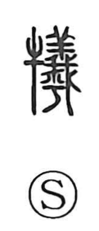

犠

Uncategorized
Kun: ikenie | On: gi
sacrifice ・ sacrificial offering
Explanation
Shirakawa traces 犠 to the older form 犧, a phono-semantic compound in which 牛 “ox” gives the sacrificial sense and 羲 supplies the sound (gi) along with vivid imagery. In 羲, a sheep offered in ritual is cut open and inspected with 我 “saw,” its severed hind legs hanging down—an image of ensuring that both the outward form and the inner organs are without flaw. When those hanging legs are omitted the form is 義, which he takes as the original graph for a sacrificial sheep. Because ox offerings were regarded as the most important, 牛 was added to create 犧, and the character came to mean a sacrificial offering more broadly, extending beyond sheep to oxen, pigs, and other animals.